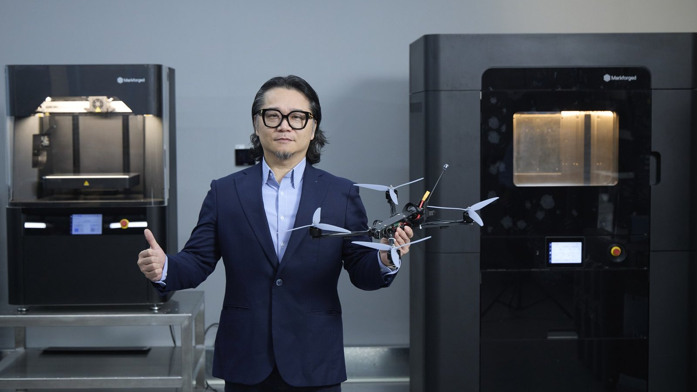
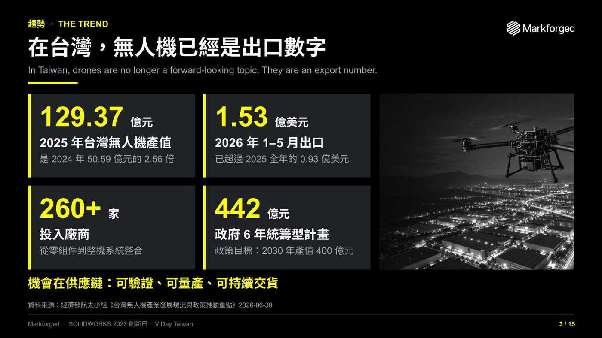
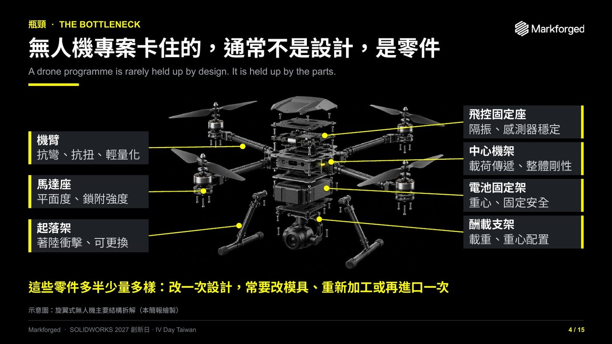
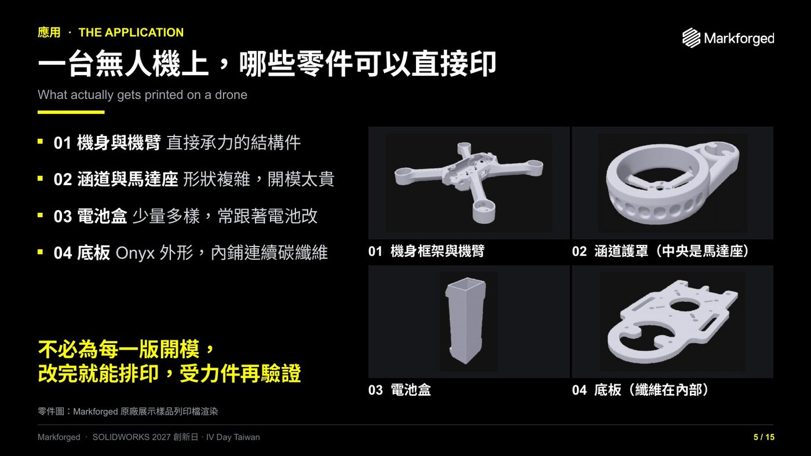
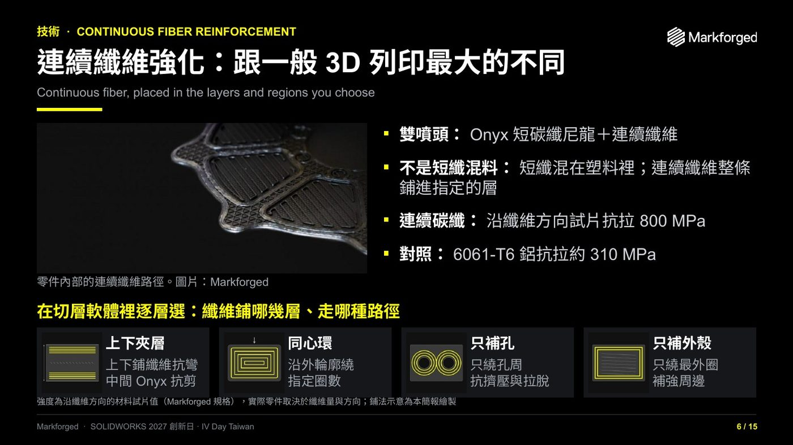
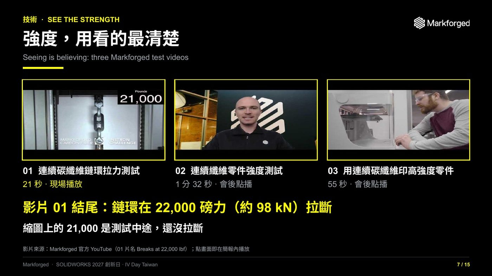
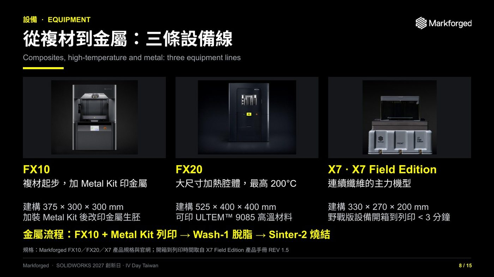
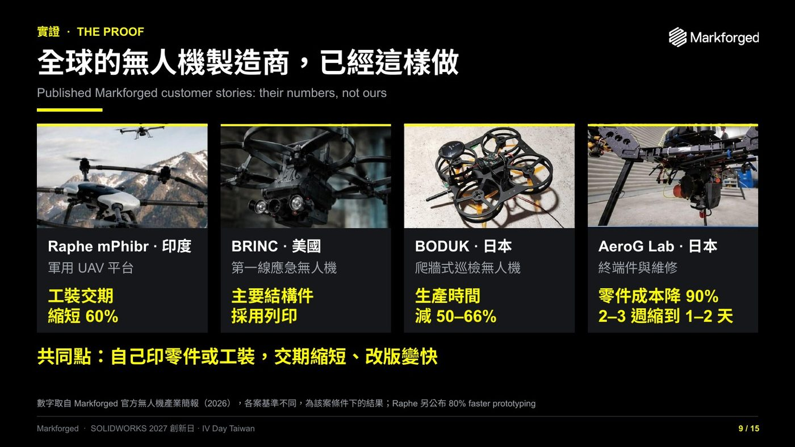
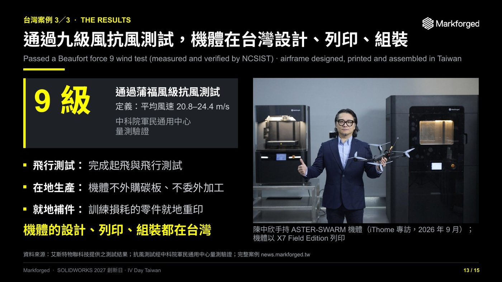
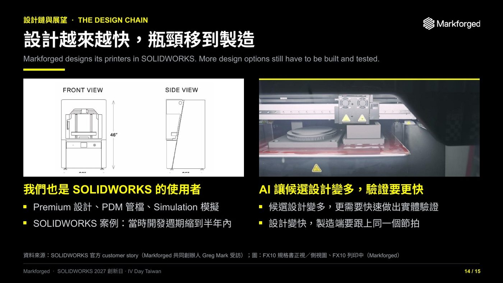

News & Insights

以下照簡報順序整理這場演講的重點，配上對應的簡報頁面；演講影片有中文版與英文版，片中直接播放兩段 Markforged 官方影片；頁末可下載簡報 PDF。

台灣：無人機已經是出口數字
機會在供應鏈：可驗證、可量產、可持續交貨
2025 年台灣無人機產值 129 億元，是前一年的 2.56 倍；2026 年前五個月出口 1.53 億美元，已超過 2025 年全年。投入的廠商超過 260 家，從零組件到整機系統整合；政府六年統籌型計畫 442 億元，目標 2030 年產值 400 億元。客戶要的是可驗證、可量產、可以持續交貨的供應商。

專案卡住的，通常不是設計，是零件
改版的速度，決定整個專案的速度
機臂、馬達座、起落架、飛控固定座、中心機架、電池固定架、酬載支架，全都是少量多樣。設計每改一次，常常就要改模具、重新加工，或再進口一次，然後就是等。

哪些零件可以直接印
不必為每一版開模：設計改完就排印，受力件印出來再驗證
機身框架與機臂、涵道護罩與中間的馬達座、電池盒，以及內部鋪了連續碳纖維的底板，都是 Markforged 原廠展示樣品的列印檔。起落架、產線上的治具與夾具，也一樣可以印。

連續纖維強化：跟一般 3D 列印最大的不同
纖維鋪在哪幾層、哪些區域，由你指定
列印機有兩個噴頭：一個擠出 Onyx（加了短碳纖的尼龍）做外形，另一個把一整條連續碳纖維鋪進零件裡。沿纖維方向，連續碳纖維試片的拉伸強度是 800 MPa，6061-T6 鋁約為 310 MPa；這是材料試片值，實際零件取決於纖維鋪多少、往哪個方向。上下夾層、同心環、只補孔、只補外殼四種鋪法，在切層軟體裡逐層選。

強度，用看的最清楚
連續碳纖維鏈環，拉到 22,000 磅力才斷
大約是十公噸重物的拉力。影片中直接播放 Markforged 官方的鏈環拉力測試。

從複材到金屬：三條設備線
FX10、FX20、X7
FX10 從複合材料起步，加裝 Metal Kit 就能印金屬，再接 Wash-1 脫脂、Sinter-2 燒結，就是完整的金屬流程。FX20 是大尺寸機型，加熱腔體最高 200°C，可以印 ULTEM 9085 高溫材料。X7 是連續纖維的主力機型；野戰版 X7 Field Edition 整台裝在強化運輸箱裡，開箱到開始列印不到三分鐘。

全球的無人機製造商，已經這樣做
數字都是他們自己公開發佈的
印度 Raphe mPhibr 工裝交期縮短 60%；美國 BRINC 的第一線應急無人機，主要結構件採用列印；日本 BODUK 的爬牆式巡檢無人機，生產時間減少 50–66%；日本 AeroG Lab 零件成本降低 90%，交期從兩三週縮到一兩天。印度 Gamma Rotors 的列印機從一台增加到十台以上，影片中播放他們的自述。

台灣案例：艾斯特 ASTER-SWARM
通過九級風抗風測試，機體在台灣設計、列印、組裝
FPV 無人機飛行時，幾秒內就要全油門加速、急轉、俯衝；一般線材印的機體，容易機臂彎曲、結構共振、沿層線開裂，馬達座一帶受熱慢慢變形。另一條路是 CNC 碳板，強度夠，但每改一次設計就要重新開料、再等一次交期。
艾斯特物聯科技以 X7 Field Edition 列印，連續碳纖維集中在機臂根部與馬達座，機體拆成五個標準模組；原型機通過蒲福九級風抗風測試，經中科院軍民通用中心量測驗證。完整案例 →

設計越來越快，瓶頸移到製造
Markforged 自己也用 SOLIDWORKS 設計列印機
Premium 做設計、PDM 管檔案、Simulation 做模擬，當時新產品開發週期縮到六個月以內。接下來 AI 會讓候選設計變多，生成式設計、拓樸最佳化一次就能出好幾個版本；但關鍵設計還是要做出來、裝上去、飛一次。設計端變快，製造端就要跟上同一個節拍。

資料來源
- 台灣無人機產業數字：經濟部航太小組《台灣無人機產業發展現況與政策推動重點》，2026 年 6 月 30 日。
- 全球案例數字取自 Markforged 官方無人機產業簡報（2026），各案基準不同，為該案條件下的結果。
- 鏈環拉力測試與 Gamma Rotors 影片片段取自 Markforged 官方 YouTube 頻道。
- 艾斯特 ASTER-SWARM 測試結果由艾斯特物聯科技提供；抗風測試經中科院軍民通用中心量測驗證。頁首照片為 iThome 2026 年 9 月專訪現場。
- 影片為 Markforged 大中華區依演講簡報自製；旁白以陳中欣本人聲音合成。背景的無人機畫面為示意插圖，不是 Markforged 產品，也不是任何客戶機型；產品影像為原廠素材。